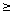
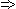

Solution to puzzle 92: Consecutive integer sums
In how many ways can 50! be expressed as a sum of two or more consecutive positive integers?
Let n be a positive integer. We first consider the more general problem of how many ways n may be expressed as a sum of one or more consecutive integers, whether positive, negative, or zero. We will show that the number of such representations is equal to the number of positive odd divisors of n. (Note: The term divisor includes 1 and the number itself. So, for example, 9 has three positive divisors.)
Determine the number of representations of n
Consider the number of ways in which n may be expressed as the sum of an odd number of consecutive integers.
All such solutions take the form n = (a - b) + ... + a + ... + (a + b), for some pair of integers, a, b, with b  0.
That is, n = a(2b + 1).
Hence the number of solutions of this equation is equal to the number of positive odd divisors of n.
Now consider the number of ways in which n may be expressed as the sum of an even number of consecutive integers.
All such solutions take the form n = (a - b + 1) + ... + a + (a + 1) + ... + (a + b), for some pair of integers, a, b, with b > 0.
That is, n = (a + ½) × 2b = (2a + 1)b. Note that b > 0  2a + 1 > 0.
Hence the number of solutions of this equation is again equal to the number of positive odd divisors of n.
The total number of representations of n is therefore twice the number of positive odd divisors of n.
Now consider the representations of n whose greatest term is d; that is, n = c + ... + d.
Note that, if c is positive, we may prefix the sum with consecutive terms (1 - c) + ... + (c - 1) = 0, so that n = (1 - c) + ... + d, a representation of n whose first term, (1 - c), is not positive.
Clearly this is the only way in which consecutive terms may be added or removed, while leaving the greatest term and the sum unchanged.
Similarly, if (1 - c) 0, the only way to leave the sum unchanged is to remove the consecutive terms (1 - c) + ... + (c - 1) = 0.
So, for each representation of n with all positive terms, there is precisely one representation in which not all the terms are positive.
Hence exactly half of the representations of n contain only positive integers.
That is, the number of ways in which n may be expressed as a sum of one or more consecutive positive integers is equal to the number of positive odd divisors of n.
Determine the number of odd divisors of 50!
The number of divisors of an integer may be determined by considering its prime factorization. The Fundamental Theorem of Arithmetic guarantees that the prime factorization is unique.
Let n = p1a1 · ... · prar , where p1 ... pr are prime numbers, and a1 ... ar are positive integers.
Now, each divisor of n is composed of the same prime factors, where the ith exponent can range from 0 to ai.
Hence there are a1 + 1 choices for the first exponent, a2 + 1 choices for the second, and so on.
Therefore the number of positive divisors of n is (a1 + 1)(a2 + 1) ... (ar + 1).
We may determine the prime factorization of 50! by a direct counting argument.
Consider the number of 2s in the prime factorization.
There are [50/2] = 25 integers between 1 and 50 that are divisible by 2. (Where [x] is the greatest integer less than or equal to x.)
We must also count the [50/4] = 12 multiples of 4, each of which contributes an additional factor of 2.
Continuing this argument, the number of 2s in the prime factororization of 50! is equal to [50/2] + [50/4] + [50/8] + [50/16] + [50/32] = 25 + 12 + 6 + 3 + 1 = 47.
Similarly, the number of 3s is equal to [50/3] + [50/9] + [50/27] = 16 + 5 + 1 = 22.
We thus find that 50! = 247 × 322 × 512 × 78 × 114 × 133 × 172 × 192 × 232 × 29 × 31 × 37 × 41 × 43 × 47.
The number of odd divisors of 50! is thus equal to 1 × 23 × 13 × 9 × 5 × 4 × 33 × 26 = 93,000,960.
We then subtract the unique representation of 50! as the sum of one consecutive positive integer: 50! = 30,414,093,201,713,378,043,612,608,166,064,768,844,377,641,568,960,512,000,000,000,000.
Hence, 50! can be expressed as a sum of two or more consecutive positive integers in 93,000,959 ways.
Remarks
Note that a power of 2 has only one odd divisor: 1. This divisor corresponds to the trivial representation of a power of 2 as one consecutive integer: itself. Any integer that is not a power of 2 has at least two odd divisors. Hence, the only positive integers that do not have a representation as a sum of two or more consecutive positive integers are powers of 2.
Source: Original; inspired by Expressibility